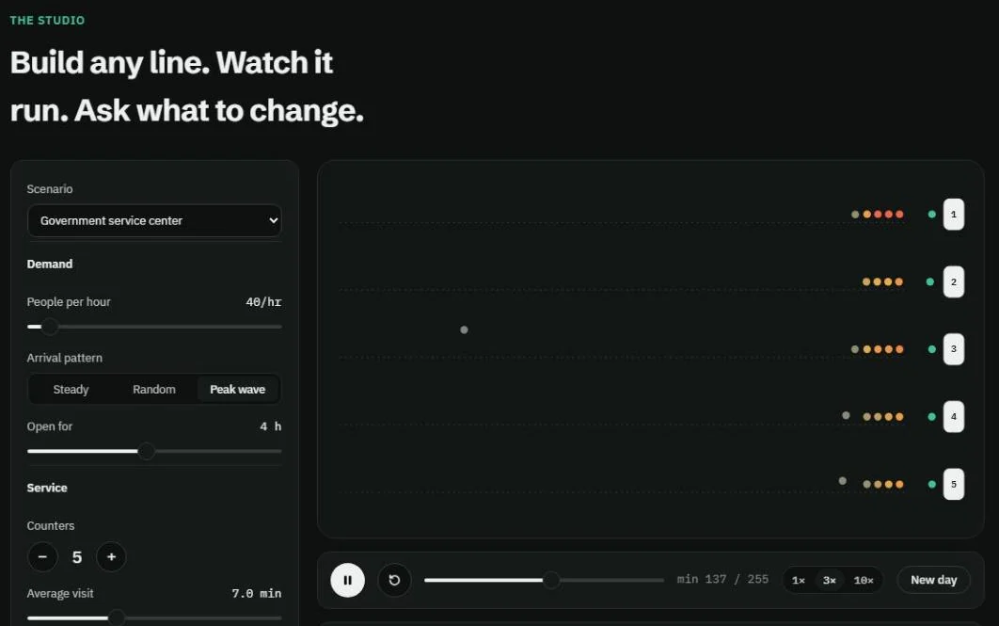

Lineform
محاكي طوابير ثنائي اللغة للعيادات ومراكز الخدمة وأي مكان ينتظر فيه الناس.A bilingual queue simulator for clinics, service centres and anywhere people wait.
بنيته من ملاحظة تكررت أمامي في مكاتب الاستقبال وعمليات الحج: الانتظار الطويل يأتي غالباً من تصميم الطابور، لا من بطء الموظفين.Built from something I kept seeing at hospital front desks and in Hajj operations: long waits usually come from how the line is designed, not from people working slowly.
تصميم المنتجProduct designعربي / إنجليزيArabic / Englishمحاكاة أحداثDiscrete-event simulation
